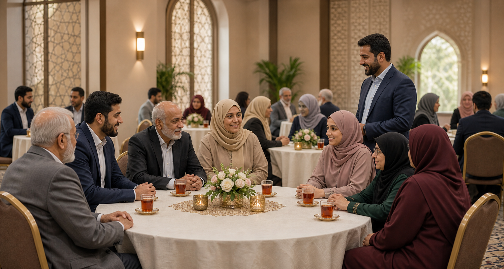

Step 3
Optional family table time
Parents and guardians can meet hosts, ask questions, and understand the process without taking over the participant’s voice.
What to expect
Family involvement is welcome when desired. A separate table gives parents or guardians space to learn the structure and share helpful context respectfully.
- Hosts explain privacy, etiquette, and follow-up steps.
- Families can ask practical questions about the process.
- Participants decide how much family involvement feels appropriate.